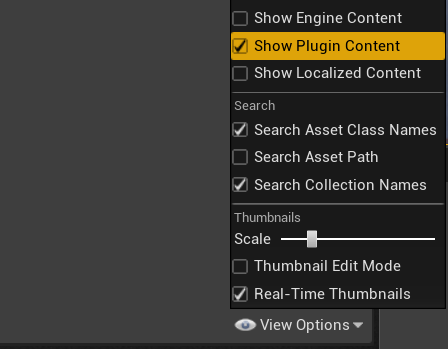
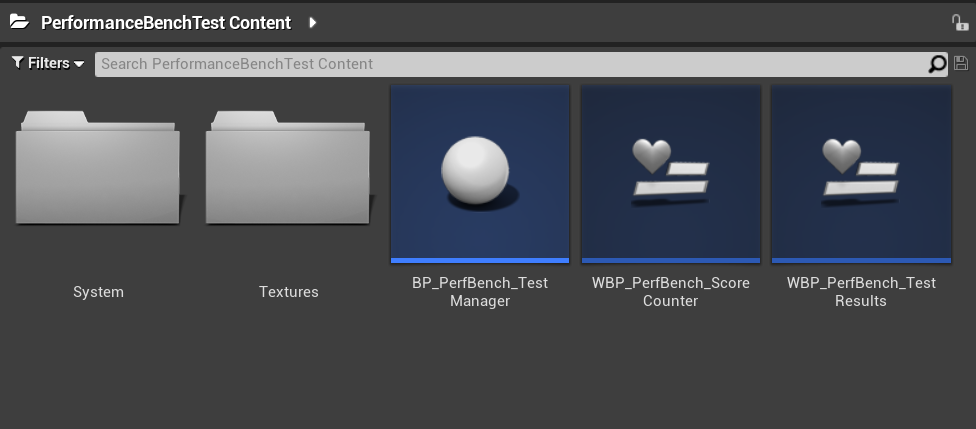
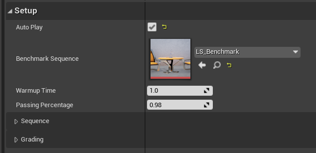
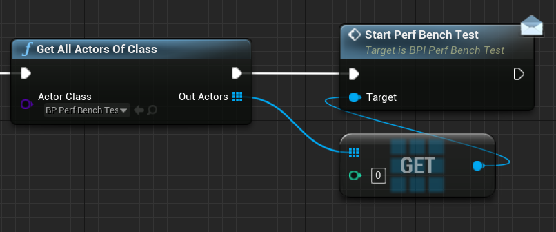

Setup¶
Locating Plugin Contents¶
After downloading and enabling the plugin within the project, developers should go to their Content Browser and locate the PerformanceBenchTest plugin content folder.
Developers that do not see any plugin content folders should enable the option to see it within their Content Browser, found in the bottom right of the window under View Options.

The plugin comes with a few User Widgets and one Blueprint Actor.

- BP_PerfBench_TestManager
- The TestManager is used to manage the communication and data between the user widgets, the level sequence and all of the scoring and grading
- WBP_PerfBench_ScoreCounter
- The Score Counter is a very simple User Widget that displays the user's current score throughout the benchmark
- WBP_PerfBench_TestResults
- The Test Results User Widget provides the end-user result screen that contains the overview of how the test went, the system configuration and the associated parameters and statistics on performance
Using TestManager¶
The goal of the plugin is to make it incredibly easy for developers to drag and drop in the Test Manager with minimal additional setup needed.
- Locate BP_PerfBench_TestManager in the Content Browser and drag it into the level
- Find the Benchmark Sequence variable in the Details panel and change to the intended Level Sequence used for the Performance Benchmark analysis
- (Optional) Adjust the Warmup Time to account for any asset streaming
Developers have the option via the Auto Play variable to either have the Test Manager automatically begin testing on Begin Play, or manually start the test.

It should be noted that this plugin does not automatically set up any benchmark sequence track. Developers are responsible for creating a Level Sequence within their levels that the TestManager can reference.
Manual Start¶
Developers that wish to have more manual control over when the performance benchmark starts can call the StartPerfBenchTest interface function after unchecking the Auto Play boolean.
